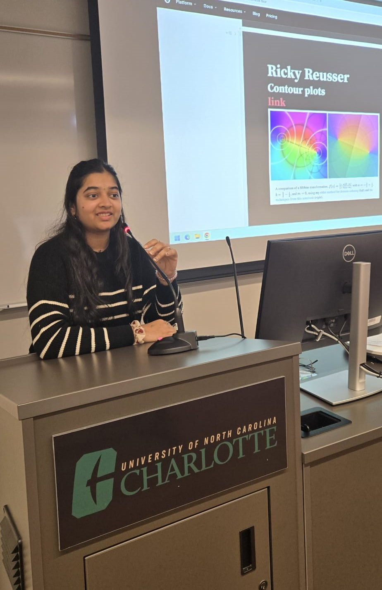
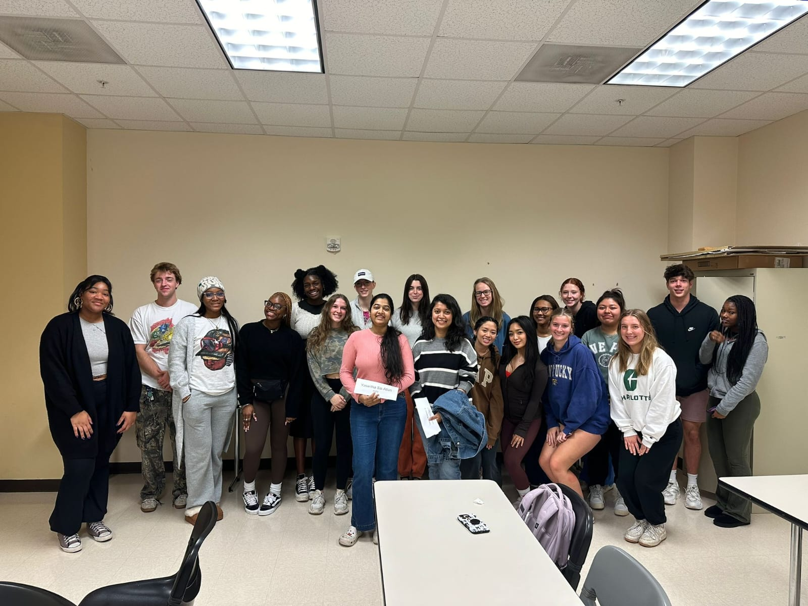
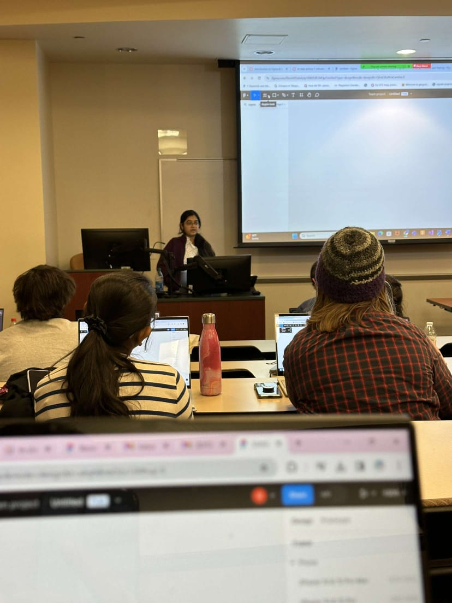
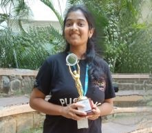

VOLUNTEERING EXPERIENCES
I have been an active NSS volunteer, participating in over 70+ events that spanned environmental sustainability, community service, and public health awareness. My role also included leading initiatives focused on women’s empowerment. As a content writer, I prepared detailed reports, managed event communications, and created marketing and social media content. I successfully organized major events such as National Science Day and mental health awareness webinars. In my capacity as President Secretary and Project Lead, I initiated Project Kanya to promote women’s health and wellness, and mentored junior volunteers in organizing impactful outreach activities throughout the academic year. My dedication and contributions were recognized when I was honored with the Best Volunteer Award.
President Secretary & Advisory Board Member
 As President Secretary, Project Lead for Project Kanya, and Advisory Board Member of NSS, I played a pivotal role in guiding and mentored junior volunteers and core committee members in organizing and executing over 70 online events during the academic year 2020-2021. Project Kanya, which I initiated, focused on women's empowerment, wellness, health, hygiene, and defense. My responsibilities included leading event planning, conducting workshops, and facilitating diverse activities such as webinars, competitions, and awareness programs. Notable contributions include launching webinars for Mental Health Awareness, coordinating youth parliament sessions, conducting sustainability initiatives, and overseeing creative workshops and cultural events.
As President Secretary, Project Lead for Project Kanya, and Advisory Board Member of NSS, I played a pivotal role in guiding and mentored junior volunteers and core committee members in organizing and executing over 70 online events during the academic year 2020-2021. Project Kanya, which I initiated, focused on women's empowerment, wellness, health, hygiene, and defense. My responsibilities included leading event planning, conducting workshops, and facilitating diverse activities such as webinars, competitions, and awareness programs. Notable contributions include launching webinars for Mental Health Awareness, coordinating youth parliament sessions, conducting sustainability initiatives, and overseeing creative workshops and cultural events.
Tutoring Session: Data into Insights
 Delivered an interactive session titled "Data into Insights" to undergraduate students, focusing on the transformative power of data visualization and analytics. The talk covered key principles of visual analytics, including tools and techniques for interpreting complex datasets. Real-world applications were showcased to demonstrate how data-driven insights drive decision-making across various industries. The session also included a hands-on demonstration, encouraging students to explore analytics tools like Tableau and Python for creating impactful visualizations. Concluded with an engaging Q&A to inspire students to pursue further learning in data analytics. Empowered students with practical knowledge and resources to bridge the gap between raw data and actionable insights, fostering a deeper understanding of the role of analytics in solving real-world problems.
Honored Recipient of the Best MS CS Instructional Assistant Award
 I am honored to have received the Best MS CS Instructional Assistant Award for my contributions to the Master of Science in Computer Science program at UNC Charlotte. Being nominated by my esteemed professor, Dr. Jing Yang, for this prestigious recognition is a humbling experience. Sharing this award alongside other distinguished individuals from the MS CS community is truly a privilege.
As someone who comes from a family of educators—my parents and grandfather being teachers—I feel a deep connection to the value of knowledge-sharing and mentorship. I dedicate this award to them, as their dedication to education and guidance has always inspired me to excel and support others in their learning journey. This achievement reinforces my passion for teaching and serving as a bridge between complex concepts and student understanding.
I am honored to have received the Best MS CS Instructional Assistant Award for my contributions to the Master of Science in Computer Science program at UNC Charlotte. Being nominated by my esteemed professor, Dr. Jing Yang, for this prestigious recognition is a humbling experience. Sharing this award alongside other distinguished individuals from the MS CS community is truly a privilege.
As someone who comes from a family of educators—my parents and grandfather being teachers—I feel a deep connection to the value of knowledge-sharing and mentorship. I dedicate this award to them, as their dedication to education and guidance has always inspired me to excel and support others in their learning journey. This achievement reinforces my passion for teaching and serving as a bridge between complex concepts and student understanding.
Village and Slum development
 As a Core Committee Member for Village and underprivileged area dvelopment, I actively participated in outreach programs focusing on educating and empowering residents in underprivileged areas. Our team conducted visits to slum areas, where we provided essential education on self-defense, cleanliness, hygiene, and the importance of education. These initiatives aimed to foster community development, improve living conditions, and raise awareness about sustainable practices. Through these efforts, we contributed to enhancing the overall quality of life and promoting a culture of self-reliance and growth within these communities.
As a Core Committee Member for Village and underprivileged area dvelopment, I actively participated in outreach programs focusing on educating and empowering residents in underprivileged areas. Our team conducted visits to slum areas, where we provided essential education on self-defense, cleanliness, hygiene, and the importance of education. These initiatives aimed to foster community development, improve living conditions, and raise awareness about sustainable practices. Through these efforts, we contributed to enhancing the overall quality of life and promoting a culture of self-reliance and growth within these communities.
Cultural Ambassador Panelist and Guest Speaker at UNC Charlotte
I had the privilege of representing India as a Cultural Ambassador at UNC Charlotte, addressing a class of Human Sciences students alongside my esteemed peers from Bangladesh and China. This unique opportunity allowed me to share insights about Indian culture, education, and societal values, fostering cross-cultural understanding. During the panel, I discussed the contrasts between Indian and U.S. cultures, the challenges international students face while adjusting to a new environment, and the richness of India’s educational journey. It was an honor to share my experiences and perspectives, highlighting the diversity of thought and traditions that shape my country. This event was not just a platform to exchange cultural knowledge but also a moment of personal growth, as it deepened my appreciation for global unity and mutual respect. Representing my home country in an academic setting was a proud and humbling experience that I dedicated to encouraging cultural curiosity and dialogue among students.
Inaugural Cohort Committe Member for MS CS Instructional Assistants
 As an inaugural cohort member and representative for the MS CS Instructional Assistants (IAs) at UNC Charlotte, I had the privilege of addressing critical issues affecting both students and IAs. My role involved serving as a bridge between the IAs and the administration, advocating for solutions to challenges such as workload management, recruitment strategies for future IAs, and enhancing the overall quality of education.
I actively participated in gathering feedback from both students and IAs, identifying areas of improvement in teaching methodologies, and proposing actionable recommendations to create a more supportive and effective academic environment. Collaborating with faculty, I contributed to discussions on refining IA recruitment processes for upcoming academic years and implementing strategies to foster better engagement and mentorship between IAs and students.
This experience allowed me to develop a deeper understanding of leadership and the intricacies of academic support, while also contributing to meaningful improvements within the MS CS program.
As an inaugural cohort member and representative for the MS CS Instructional Assistants (IAs) at UNC Charlotte, I had the privilege of addressing critical issues affecting both students and IAs. My role involved serving as a bridge between the IAs and the administration, advocating for solutions to challenges such as workload management, recruitment strategies for future IAs, and enhancing the overall quality of education.
I actively participated in gathering feedback from both students and IAs, identifying areas of improvement in teaching methodologies, and proposing actionable recommendations to create a more supportive and effective academic environment. Collaborating with faculty, I contributed to discussions on refining IA recruitment processes for upcoming academic years and implementing strategies to foster better engagement and mentorship between IAs and students.
This experience allowed me to develop a deeper understanding of leadership and the intricacies of academic support, while also contributing to meaningful improvements within the MS CS program.
Core Committee Member – Educational Initiatives
 As part of my commitment to community and educational development, I organized and conducted science fairs for school development, particularly during International Science Day. These events were aimed at fostering curiosity and a love for learning among students in government schools. I played a key role in educating children on fundamental science concepts, encouraging interactive participation, and promoting an engaging learning environment. Through these initiatives, I helped to inspire young minds, emphasize the importance of education, and support school development efforts. These efforts not only enhanced students' understanding of science but also motivated them to pursue education with enthusiasm and contributing to their long-term academic growth.
As part of my commitment to community and educational development, I organized and conducted science fairs for school development, particularly during International Science Day. These events were aimed at fostering curiosity and a love for learning among students in government schools. I played a key role in educating children on fundamental science concepts, encouraging interactive participation, and promoting an engaging learning environment. Through these initiatives, I helped to inspire young minds, emphasize the importance of education, and support school development efforts. These efforts not only enhanced students' understanding of science but also motivated them to pursue education with enthusiasm and contributing to their long-term academic growth.
Graduate Teaching & Research Assistant – Visual Analytics
 As a Graduate Research Assistant at UNC Charlotte, I have instructed over 80 students, leading to a 20% improvement in class performance by teaching data visualization tools such as Tableau, D3.js, JavaScript, and TypeScript through interactive coursework and hands-on projects. I have mentored students in research initiatives, leveraging R and Python for statistical analysis and data exploration. Additionally, I have assisted the professor with course design, grading, and scheduling, ensuring a comprehensive learning experience. My research involves analyzing metabofood datasets to explore supplements and disease cures using advanced visualization techniques. Through these efforts, I aim to enhance both educational outcomes and research advancements in the field of visual analytics.
International Coastal Cleanup Day – Beach Cleanup Initiative
 On International Coastal Cleanup Day, We led an early morning beach visit with a team of dedicated volunteers, collaborating closely with local coast guards. We focused on spreading awareness about the importance of maintaining a clean beach environment and took hands-on action to remove litter and debris from the shoreline. This event not only promoted environmental responsibility and awareness but also strengthened community engagement and showcased the impact of collective volunteer efforts in preserving natural habitats.
On International Coastal Cleanup Day, We led an early morning beach visit with a team of dedicated volunteers, collaborating closely with local coast guards. We focused on spreading awareness about the importance of maintaining a clean beach environment and took hands-on action to remove litter and debris from the shoreline. This event not only promoted environmental responsibility and awareness but also strengthened community engagement and showcased the impact of collective volunteer efforts in preserving natural habitats.
Project Lead/Initiator – Project Kanya
 As the project lead and initiator of Project Kanya, I spearheaded numerous events focused on women's welfare and development. I collaborated with women-centric organizations like the Rakshin NGO to raise awareness about POSCO and coordinated with various committees to organize self-defense workshops and sanitary napkin donation drives. Project Kanya embodies its mission—to empower women—by hosting informative and interactive sessions on women's health, hygiene, and defense. The funds collected through event registrations were allocated towards Rural Women Welfare, fostering tangible community support. The project also featured discussions on topics such as “Gender Fluidity” and conducted weekly quizzes on government schemes and initiatives to enhance awareness and promote women’s wellness. Through these efforts, Project Kanya has made significant strides in educating, empowering, and supporting women in the community.
As the project lead and initiator of Project Kanya, I spearheaded numerous events focused on women's welfare and development. I collaborated with women-centric organizations like the Rakshin NGO to raise awareness about POSCO and coordinated with various committees to organize self-defense workshops and sanitary napkin donation drives. Project Kanya embodies its mission—to empower women—by hosting informative and interactive sessions on women's health, hygiene, and defense. The funds collected through event registrations were allocated towards Rural Women Welfare, fostering tangible community support. The project also featured discussions on topics such as “Gender Fluidity” and conducted weekly quizzes on government schemes and initiatives to enhance awareness and promote women’s wellness. Through these efforts, Project Kanya has made significant strides in educating, empowering, and supporting women in the community.
International Ozone Day – School Development Activities
 On International Ozone Day, I organized and conducted school development activities aimed at raising awareness about the importance of ozone layer protection. We engaged students in government schools through educational initiatives, including interactive quizzes and drawing competitions centered around ozone preservation and environmental stewardship. These activities were designed to inform and inspire young minds, encouraging them to understand the significance of protecting our atmosphere and fostering an early sense of responsibility towards the environment.
On International Ozone Day, I organized and conducted school development activities aimed at raising awareness about the importance of ozone layer protection. We engaged students in government schools through educational initiatives, including interactive quizzes and drawing competitions centered around ozone preservation and environmental stewardship. These activities were designed to inform and inspire young minds, encouraging them to understand the significance of protecting our atmosphere and fostering an early sense of responsibility towards the environment.
CCI Cohort Representative - UNCC
 In my role as an Instructional Assistant at the College of Computing and Informatics, I have been actively involved in enhancing teaching practices and advocating for student skill development. As a cohort representative, I have engaged in discussions aimed at refining instructional approaches, addressing student concerns, and supporting initiatives to improve the overall learning experience. My focus has been on fostering a supportive and effective academic environment by addressing issues students face, facilitating open communication, and contributing to the continuous improvement of teaching methodologies.
In my role as an Instructional Assistant at the College of Computing and Informatics, I have been actively involved in enhancing teaching practices and advocating for student skill development. As a cohort representative, I have engaged in discussions aimed at refining instructional approaches, addressing student concerns, and supporting initiatives to improve the overall learning experience. My focus has been on fostering a supportive and effective academic environment by addressing issues students face, facilitating open communication, and contributing to the continuous improvement of teaching methodologies.
Club Member – Robotics Club at VITCC & Dreadnought Robotics
 As an active member of the Robotics Club at VITCC, I played a vital role in designing, developing, and competing with robotics projects. My contributions included participating in numerous national competitions where our team secured victories, showcasing our innovation and technical expertise. Additionally, as part of Dreadnought Robotics, I was deeply involved in designing and building bots, honing my skills in engineering, problem-solving, and teamwork. These experiences have significantly enhanced my knowledge in robotics design and competitive strategy, reinforcing my passion for technology and hands-on learning.